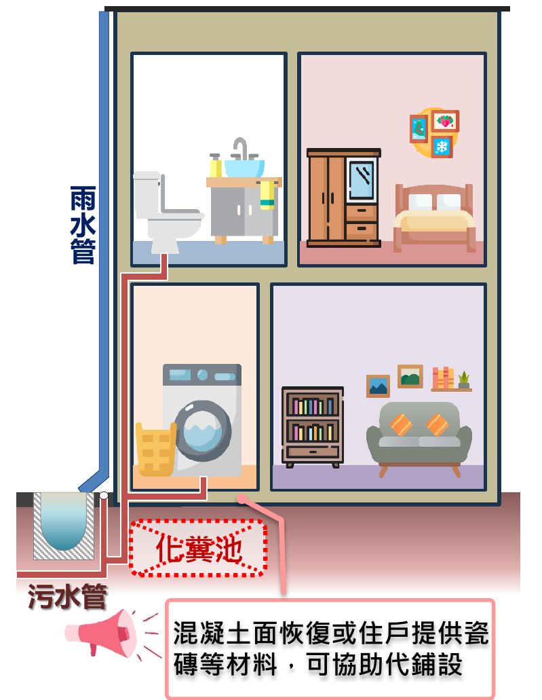

關於污水下水道工程
改善環境品質，打造更潔淨、更舒適的生活空間。
什麼是
污水下水道？
污水下水道透過密閉管線收集家庭雜排水並送至水資源回收中心處理，與雨水管線分流，防止堵塞與惡臭，維護公共衛生。
污水下水道施工前後比較
施工前
未接管前，雨水污水皆排入側溝，排水油脂堵塞。
晴天污水淤積，惡臭異味。
施工後
施工後，排水順暢，街道環境改善，提升生活品質與市容美觀。
污水下水道用戶接管規範
根據「下水道法」，在專案工程（獎勵接管）期間，若污水管網已到達地區且具足夠空間，主幹管以外之用戶接管及用戶排水設備可委託政府代為施作。 公共管線完成公告開始使用後六個月內，若未接管，將依「下水道法」第32條處罰未接管用戶。
用戶義務
| 條文依據 | 內容 |
|---|---|
| 第19條 | 公共管線完成後，公告開始使用，六個月內必須接管。 |
| 第32條 | 若逾期未接管，政府可依規定處罰用戶。 |
| 專案工程 | 政府可代辦用戶接管及用戶排水設備施工。 |
用戶權益
| 類別 | 內容 |
|---|---|
| 自主權 | 若因房屋結構或其他因素，用戶可自行辦理接管，但需向機關申請並同意後辦理。 |
| 補助權 | 於專案獎勵接管期間，可享有政府代辦施工與補助方案。 |
| 知情權 | 用戶可依公告了解管線完成及使用期限，保障施工透明。 |
社區說明會
為了讓居民更加了解施工內容與接管流程，本公司於工程進行前及施工期間，
定期舉辦社區說明會，向當地居民說明施工範圍、時間及安全措施，
並傾聽社區的意見與建議，確保施工透明、溝通順暢。


接管後的好處
接管後環境整潔衛生改善，增加活動空間、空氣流通、採光良好。
1. 環境改善
後巷環境髒亂，易積水，
蚊蠅叢生，是環境的死角。
接管後環境整潔衛生，增加
通行空間、採光明亮度。
2. 節省費用
如何省下費用？
廢除化糞池
化糞池需定期抽水肥維護，每月投藥保養，
而且是蚊蟲(病媒)及臭味(硫化氫及甲烷)的來源。
接管廢除化糞池後，省下定期抽水肥、維護保養費用，
同時環境整潔、空氣清新。

完成接管後，每戶每年可省下約 3,000～6,000 元，同時免去維護與異味困擾。
3. 都市美學
結合當地特色打造新景點，帶動都市美學。
美化後巷成為鄰里間良好的溝通與活動空間。

用戶接管補助方案
為了鼓勵住戶盡早接管公共污水下水道，政府提供用戶接管補助，減輕民眾施工與管線接駁的費用負擔。
透過補助方案，住戶可以用較低的成本完成家戶污水排放的改善，不僅能提升生活環境衛生，也能共同維護社區水質與城市整體環境品質。
公費及自費施工項目
公費及自費施工項目
化糞池廢除補助
化糞池廢除補助
化糞池位於地面層
化糞池位於地面層水利局協助廢除(不補助)
化糞池位於地面層+自行改管至前巷水利局提供改管補助
補助5,000元/套
化糞池位於地下層

銀行貸款手續補助
銀行貸款手續補助
貸款手續處理費
申請之建築物經本局通知並配合於指定期限內(進入裁罰前)完成用戶接管相關工程，
而須向金融機構貸款者，得申請最高新臺幣五千元貸款手續處理費，
本局並依金融機構出具之繳款證明一次發給。
中低收入補助
中低收入補助
建築物所有權人屬中低收入戶或低收入戶，為完成用戶接管相關工程，得於施工前提出申請，
本局並於完工後核實補助；其補助金額最高新臺幣十五萬元。
台中市政府合作影片
完善污水管網，提升生活品質
台中市積極推動下水道建設，核心工程包括污水管水道鋪設、用戶接管服務與後巷美化工程。透過完善的污水管網，將家庭與商家的排水系統安全接入市政管線，有效處理生活污水，改善水質與環境衛生。同時結合後巷景觀美化，將原本雜亂的空間轉化為整潔、明亮、安全的社區通道。這項工程不僅提升都市排水效能，更打造宜居、乾淨的生活環境，為市民創造更健康與舒適的家園。
常見問題
可以不配合接管嗎？後續有無罰則?
不行。依據《下水道法》，公告6個月內未接管者將面臨罰鍰。
「拆改建廠商」與「水利局施工廠商」不同?
「拆改建廠商」為住戶自行委託辦理增建自拆、雨水改管與污水分流等自費施作項目廠商，與住戶有契約關係。
「水利局施工廠商」為政府發包施作公共管線、用戶接管及化糞池廢除之公費施作項目廠商，與政府有契約關係，在現場穿著印有水利局字樣的背心。
契約中有明訂施工廠商不得再承攬住戶委託拆改建業務。
仍有不瞭解用戶接管的其他問題？
歡迎來電市政府水利局洽詢
污水工程科總機：(04)2228-9111#53800
市話免費諮詢專線：0800-530053轉1或2
必要時，將由用戶接管服務團派員提供用戶改管諮詢、協助提供拆改建及改管過程的專業判斷。